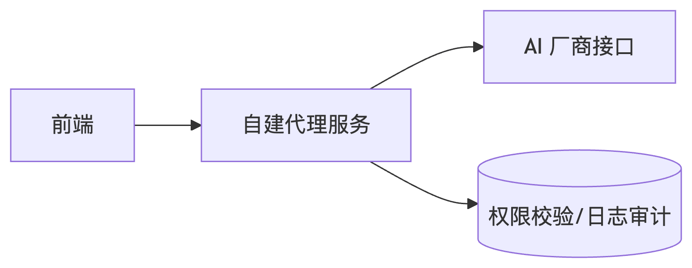

如何保障前端调用 AI 接口时的安全性与权限控制？你是否考虑过代理服务或签名机制？
参考答案
保障前端调用 AI 接口的安全性和权限控制需要分层防御策略，结合技术方案和架构设计。
以下是系统性解决方案：
一、核心风险与应对措施
1. 接口暴露风险
- 代理服务层（关键方案）
前端不直接调用 AI 接口，而是通过自建代理服务中转：<br>

- 优势：隐藏真实 endpoint、屏蔽 API Key
- 实现：使用 Node.js/Nginx 反向代理，添加请求过滤
2. 认证劫持风险
- 动态签名机制
替代静态 API Key 的方案：<br> ``javascript<br> // 前端生成签名（需配合时效控制）<br> const nonce = uuidv4();<br> const timestamp = Date.now();<br> const sign = crypto.createHmac('sha256', secret)<br> .update(${apiPath}${nonce}${timestamp})<br> .digest('hex');<br> ``
- 服务端验证：检查时间戳（防重放）、nonce 唯一性
3. 敏感数据泄露
- 最小化权限原则
- 使用 AI 厂商的临时令牌（如 AWS STS Token）
- 按功能拆分不同 API Key（如对话/绘图分离）
二、技术实现方案
1. 代理服务增强设计
- 请求过滤
```typescript<br> // Express 中间件示例<br> app.use('/ai-proxy', (req, res, next) => {<br> // 校验来源域名<br> if (!validOrigins.includes(req.get('origin'))) return res.sendStatus(403);
// 清洗敏感参数<br> const { query } = req.body;<br> if (containsSensitiveData(query)) {<br> return res.status(400).json({ error: 'Invalid input' });<br> }<br> next();<br> });<br> ```
2. 多层认证方案
| 层级 | 实现方式 | 适用场景 |
|---|---|---|
| 用户认证 | JWT + OAuth 2.0 | 前端用户身份确认 |
| 服务认证 | HMAC 签名 + 时间窗口 | 代理服务到 AI 接口 |
| 网络认证 | IP 白名单 + VPC 私有链路 | 生产环境高安全要求 |
3. 审计与监控
- 日志记录：存储所有 AI 请求的元数据（用户 ID、时间、消耗 token 数）
- 实时检测：对异常频次请求触发 CAPTCHA 验证
三、进阶防护策略
1. 请求内容安全
- 输入过滤
- 清理 Prompt 中的敏感词（如 PII 信息）
- 使用正则表达式检测注入攻击模式
``javascript<br> const MALICIOUS_REGEX = /(?:sudo|rm|\bdelete\b)/i;<br> if (MALICIOUS_REGEX.test(userPrompt)) {<br> throw new Error("Invalid request");<br> }<br> ``
2. 输出控制
- 内容审查
对 AI 返回结果进行扫描：<br> ``python<br> # 使用本地审查模型（如 transformers）<br> from transformers import pipeline<br> classifier = pipeline("text-classification", model="Hate-speech-CNERG/dehatebert-mono-english")<br> if classifier(ai_response)[0]['label'] == 'HATE':<br> return sanitized_response<br> ``
3. 限流保护
- 分层限流
``nginx<br> # Nginx 限流配置<br> limit_req_zone $binary_remote_addr zone=ai_api:10m rate=5r/s;<br> location /ai-proxy {<br> limit_req zone=ai_api burst=10;<br> proxy_pass https://ai-service.com;<br> }<br> ``
四、架构选型建议
- Serverless 代理
- 使用 Cloudflare Workers/AWS Lambda 实现无服务器代理
- 优点：自动扩展、边缘节点缓存
- API 网关集成
- 通过 Kong/Apigee 添加 JWT 验证、请求转换层
- 零信任方案
- 结合 BeyondCorp 模型，每次请求验证设备和用户上下文
- 必选方案：代理服务隐藏真实接口 + 动态签名替代静态密钥
- 推荐组合：JWT 用户认证 + HMAC 服务间认证 + 输入/输出过滤
- 高阶防护：私有链路接入 + 本地内容审查模型
- 监控体系：请求日志审计 + 异常行为实时阻断